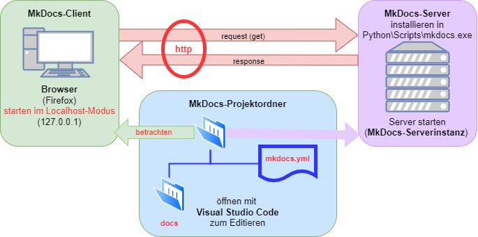

Erklärung des MkDocs-Server-Prinzips
Überblick
Das Bild zeigt das Prinzip des MkDocs-Servers, der für das Hosting und die Anzeige von Dokumentationsprojekten in einer webbasierten Umgebung genutzt wird. Nachfolgend wird der Prozess und die Interaktion der verschiedenen Komponenten erläutert.

Komponenten
1. MkDocs-Client
- Browser (z.B. Firefox):
- Der Benutzer startet den Browser im Localhost-Modus (127.0.0.1), um die Dokumentation zu betrachten.
- Der Browser sendet HTTP-Requests (Anfragen) an den MkDocs-Server und empfängt HTTP-Responses (Antworten), um die Dokumentation anzuzeigen.
- Localhost bedeutet, dass der Browser auf einen Webserver zugreift, der lokal auf dem Rechner läuft.
2. MkDocs-Server
- Der MkDocs-Server wird lokal auf dem Rechner installiert, typischerweise im Pfad Python\Scripts\mkdocs.exe.
- Der Server wird gestartet, wodurch eine MkDocs-Serverinstanz läuft. Diese Instanz nimmt HTTP-Anfragen vom Browser entgegen und liefert die entsprechende Dokumentation als Antwort zurück.
- MkDocs nutzt das HTTP-Protokoll (insbesondere GET-Requests), um die Dokumentation dynamisch an den Browser auszuliefern.
3. MkDocs-Projektordner
- Der Projektordner enthält die Dokumentationsdateien sowie die Konfigurationsdatei:
- docs-Ordner: Dieser Ordner enthält die Markdown-Dateien, die die eigentliche Dokumentation bilden.
- mkdocs.yml: Eine Konfigurationsdatei, die das Layout, das Thema und andere Einstellungen für die Dokumentation definiert.
- Zum Bearbeiten dieser Dateien wird üblicherweise ein Code-Editor wie Visual Studio Code verwendet.
Workflow
- Der Benutzer bearbeitet die Dokumentationsdateien und die Konfigurationsdatei (mkdocs.yml) in Visual Studio Code.
- Die Änderungen können lokal über den MkDocs-Server betrachtet werden.
- Der Benutzer öffnet den Browser und verbindet sich über localhost (127.0.0.1) mit dem MkDocs-Server.
- Der Browser sendet eine HTTP-Anfrage an den Server, und dieser liefert die aktualisierte Dokumentation als HTTP-Antwort zurück.
- Die Dokumentation wird dynamisch im Browser angezeigt.
Zusammenfassung
Der MkDocs-Client (Browser) sendet HTTP-Anfragen an den MkDocs-Server, welcher die Inhalte aus dem MkDocs-Projektordner bereitstellt. Der Benutzer kann die Dokumentation durch Bearbeitung der Markdown-Dateien und der mkdocs.yml-Konfigurationsdatei in Visual Studio Code anpassen, während der Server diese Änderungen im Browser anzeigt.